GPU decoding
- Header
geozl/gpu.h, part of the supported source API since 0.30.0, with one API for every GPU backend and its prototypes in the C API.
An Earth observation training batch holds windows and bands in device memory. A typical path decodes tiles on the CPU, cuts windows, stacks them and copies the result to the GPU. The CPU does not use those decoded bytes after the copy.
GeoZL's GPU API accepts compressed frames and a device destination. The caller specifies where each decoded rectangle lands in a device buffer. It decodes on the GPU where the frame allows it, on the CPU where it must, and writes the samples in place. For the frames that decode on the device, the decompressed raster never exists in host memory at all.
Who calls it
GPU decoding is a C API, in geozl/gpu.h. Python, R, Julia and JavaScript have no GPU call today, and a Python binding on the same calls is planned.
Rumi uses it to fill training batches from .rumi files.
The header uses DLPack device type numbers, so a tensor's device type can pass through unchanged. The rest of the API is vendor independent. Device memory is a backend buffer handle passed as a pointer-sized value. Calls, copies and rules are the same across supported GPUs. geozl_gpu_available(type) reports whether the build supports a device type.
The example uses four 256 by 256 tiles of unsigned 16-bit samples. Each tile has one compressed frame. The output is four 128 by 128 windows, each starting at row 64 and column 32, in a 4 by 128 by 128 GPU tensor.
A decoder you make once
Create one GeozlGpu and reuse it across batches. It holds the device, the kernels it has loaded, host staging that the GPU reads directly, and a small cache of device scratch. Creation opens the device and loads the small place kernel, so a missing driver fails before training starts. The PFOR and PivCo kernels load the first time a batch needs them.
char error[512];
// deviceType and deviceId come from the tensor's DLPack device
GeozlGpu *gpu = geozl_gpu_create(deviceType, deviceId, 4, 64 << 20, 1,
error, sizeof error);
if (gpu == NULL) {
fprintf(stderr, "%s\n", error);
return 1;
}The first two arguments pick the device type and the device index. The third, threads, caps the host threads one decode may use. GPU frames still need OpenZL to parse them and GeoZL to check and plan the payload on the CPU. Those threads take frames from a shared counter, so more threads help when a batch has many frames. 0 means one.
maxDecodedBytes limits the sum of decoded frame sizes per call and must be nonzero. The decoder checks it before reserving staging or device memory. Our four tiles decode to 512 KiB in total. A 64 MiB limit allows bigger batches. verifyChecksums enables frame checksum verification.
The calls that can fail share one error convention. geozl_gpu_create, geozl_gpu_decode, geozl_gpu_synchronize and geozl_gpu_alloc take a character buffer and its capacity, return 0 or a non-NULL pointer on success, and on failure write a short message into the buffer. geozl_gpu_available returns nonzero when the build drives the device type, geozl_gpu_pointer returns the device address, and geozl_gpu_destroy and geozl_gpu_free return nothing.
A decoder serves one call at a time. If two threads decode in parallel, each needs its own.
Frames, copies and the target
A call takes frames, copies and a target buffer.
A GeozlGpuFrame is the compressed bytes plus the exact number of bytes the frame decodes to. Caller metadata supplies the decoded byte count before payload parsing. Each of our tiles decodes to 256 times 256 samples of 2 bytes.
enum { TILES = 4, TILE = 256, WINDOW = 128, SAMPLE = 2 };
GeozlGpuFrame frames[TILES];
for (size_t i = 0; i < TILES; ++i)
frames[i] = (GeozlGpuFrame){data[i], size[i], TILE * TILE * SAMPLE};Copies select windows and place them in the target. A GeozlGpuCopy copies a window of rows × width samples from one decoded frame into the target. Every offset and stride is in bytes and must be a multiple of the sample size. On each side there is a starting offset, a row stride, and a step between the samples of one row.
The first sample is at row 64, column 32 of a 256-sample row. Its byte offset is (64 * 256 + 32) * 2 = 32832. A tile row is 256 * 2 = 512 bytes, and neighbouring samples are 2 bytes apart. On the target side, window i starts after i earlier windows of 128 * 128 * 2 = 32768 bytes each, and a window row is 128 * 2 = 256 bytes.
GeozlGpuCopy copies[TILES];
for (size_t i = 0; i < TILES; ++i)
copies[i] = (GeozlGpuCopy){
.frame = i,
.source = (64 * TILE + 32) * SAMPLE, // row 64, column 32
.sourceRow = TILE * SAMPLE, // 512 bytes per tile row
.sourceStep = SAMPLE,
.destination = i * WINDOW * WINDOW * SAMPLE,
.destinationRow = WINDOW * SAMPLE, // 256 bytes per window row
.destinationStep = SAMPLE,
.width = WINDOW,
.rows = WINDOW,
};The animation follows one of these copies. The animation starts at byte 32832 of the tile. Source rows are 512 bytes apart, target rows are 256 bytes apart, and the four window slots start at multiples of 32768.

source and sourceRow describe where the window sits in the decoded frame. destination and destinationRow describe where it goes in the batch.Here, both step fields equal the sample size, but they also support other layouts. Suppose instead that our four frames were four bands of the same 128 by 128 window and the model wanted them interleaved, channels last. Band b starts at destination = b * 2. Its destinationStep = 4 * 2 = 8 bytes, and destinationRow = 128 * 8 = 1024 bytes. Nothing else changes. The same fields can also place tiles side by side in a larger mosaic, or take only every other column.
Copies must not overlap in the target. No two copies in a call may write the same target sample. Copies run in parallel on the device, so overlapping writes would have no defined winner. The decoder does not check for overlap, so keeping copies apart is up to the caller, as gpu.h states. It does reject a copy that reaches outside its frame or the target, and a copy with more than one row or column needs nonzero destination strides.
The target is a GeozlGpuTarget, which holds the device memory, a byte offset into it, how many bytes are writable after that offset, and the stream the work should join. The target may be a framework-owned device buffer. Its device handle goes in as a pointer-sized value.
GeozlGpuTarget target = {
.memory = (void *)(uintptr_t)batch, // the tensor's device handle
.offset = 0,
.bytes = TILES * WINDOW * WINDOW * SAMPLE,
.stream = stream, // the framework's stream, or NULL
};A framework stream can consume the batch after decode on the same queue. Passing that stream lets the decode join the same queue, so the model's next kernel runs after the samples land without any extra waiting on the host. NULL means the default stream. A backend without streams ignores the field.
sampleBytes is the width of one target sample, 1, 2, 4, 8 or 16 bytes, and the target address must be aligned to it. elementBytes is the width of values stored in each frame and must divide sampleBytes. Both are 2 in this example because the frames and target use 16-bit samples.
if (geozl_gpu_decode(gpu, frames, TILES, copies, TILES, SAMPLE, SAMPLE,
&target, NULL, error, sizeof error) != 0)
fprintf(stderr, "decode failed: %s\n", error);The two sizes may differ, but elementBytes must divide sampleBytes. A frame that stores the bytes of 16-bit samples as plain bytes, for example, decodes with elementBytes of 1 into 2-byte samples. As the next section shows, only frames where the two are equal can decode on the device.
What runs on the GPU
The API accepts any GeoZL frame. Decode location is chosen per frame.
A frame uses the GPU if its last codec is pfor or lanes, it has one chunk, and its elements match 1- or 2-byte target samples. In terms of recipes, that is id>pfor, planar>zigzag>pfor, id>lanes and planar>zigzag>lanes.
The CPU still parses device-routed frames. OpenZL reads the frame. GeoZL captures the payload before the last codec expands it, validates and plans its blocks, and places them in GPU-readable staging. The expansion, any inverse planar step, and the copies into the target all happen on the device.
Other frames decode with OpenZL on the CPU. Their samples enter host staging, then are uploaded and placed by the same copies. This includes zstd and other entropy graphs, NoData and quantized frames, raw frames, and frames with more than one chunk. Multi-plane planar frames with planes shorter than 256 samples also use the host path.
GPU kernels need threads to locate values independently, and PFOR and PivCo provide that property. GPU-friendly codecs explains why, and PFOR and PivCo describe each format.
In the picture below, one call carries five frames. The animation routes single-chunk PFOR and PivCo frames through CPU planning and GPU expansion. Zstd, NoData and a two-chunk PFOR frame decode on the CPU and upload to the same target.

Host and device frames can share one call and reach the same target through the same copies. For GPU reading, write frames with pfor or lanes recipes.
The forceHost argument of geozl_gpu_decode takes one byte per frame, or NULL for automatic routing. A nonzero byte routes that frame through the host.
From compressed bytes to a GPU tensor covers the staging and kernels behind this routing.
When the work is done
geozl_gpu_decode can return before samples are ready.
A backend may return once the work is queued on target->stream, with kernels still running, or finish before it returns. CUDA queues and Metal finishes. Code that always synchronizes before it reads or frees the target works on every backend.
When the work is queued, host threads can parse and plan the next batch while the GPU decodes this one. Two staging areas let a call wait only for the call two before it on the same stream. A later call may report an earlier device failure without waiting for the earlier decode to finish.
The timeline below shows two calls on one stream. The host returns from the first queued decode, then prepares the second while GPU kernels run. The target stays in use until geozl_gpu_synchronize returns.

geozl_gpu_synchronize returns, the target may be freed or reused.Keep the target allocation and stream alive until queued work finishes. Do not free or reuse the target before then. Other work on the same stream may read it because the stream orders that work. Call geozl_gpu_synchronize to wait for queued work and receive any error.
if (geozl_gpu_synchronize(gpu, error, sizeof error) != 0)
fprintf(stderr, "decode failed: %s\n", error);Switching a decoder to a different stream, synchronizing it and destroying it all wait for everything in flight, so geozl_gpu_destroy is always safe once no other call is running. A backend may also finish the work before geozl_gpu_decode returns.
Memory and checksums
Most callers decode into memory their framework owns, as we did above. For tests or standalone tools, the decoder can allocate a target. geozl_gpu_alloc returns caller-owned memory on the decoder's device, geozl_gpu_pointer gives the device handle to put in GeozlGpuTarget.memory, and geozl_gpu_free releases it. The same lifetime rules apply, so synchronize before freeing.
GeozlGpuMemory *memory =
geozl_gpu_alloc(gpu, TILES * WINDOW * WINDOW * SAMPLE, error, sizeof error);
GeozlGpuTarget target = {geozl_gpu_pointer(memory), 0,
TILES * WINDOW * WINDOW * SAMPLE, NULL};
/* decode, synchronize, read */
geozl_gpu_free(memory);
geozl_gpu_destroy(gpu);OpenZL frames can carry two checksums, one over the compressed bytes and one over the decoded content. With verifyChecksums set, frames that decode on the host check both. Frames that decode on the device check only the compressed checksum, on the CPU, before their payload is staged. The device path cannot check the content checksum because decoded samples do not return to the host. The compressed checksum still catches a corrupted or truncated file, so keep it on for any frame that comes from outside the process.